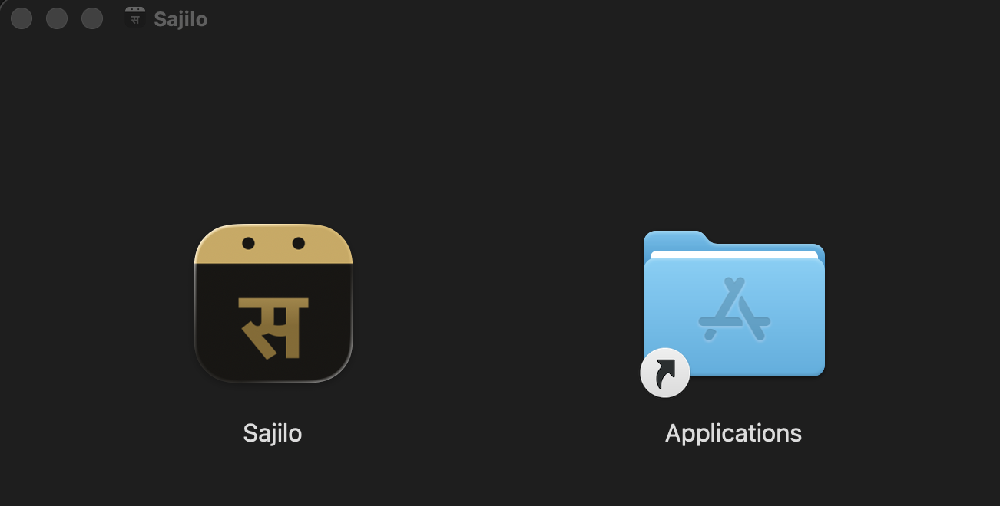
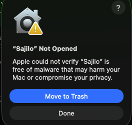
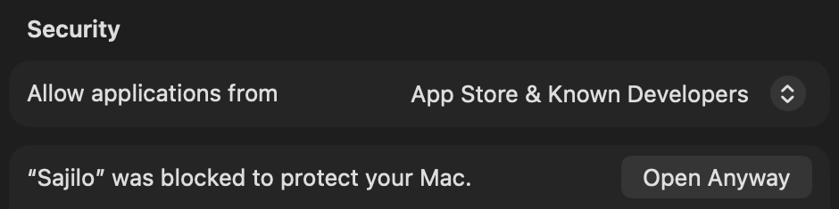
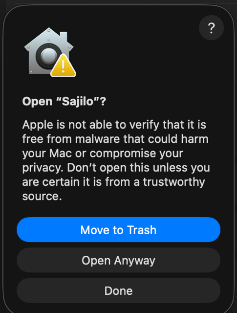
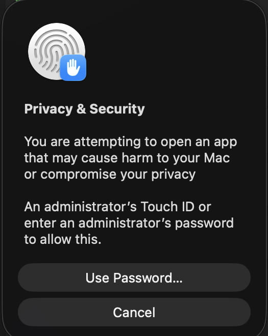
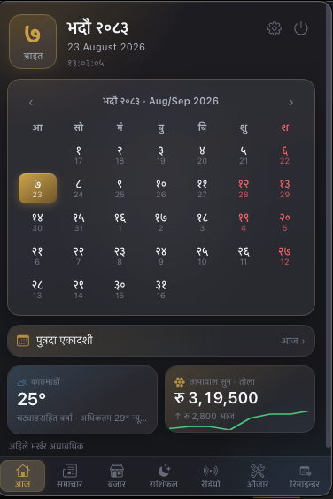

Installing on macOS
Sajilo's beta builds aren't code-signed yet, so macOS shows a one-time security warning the first time you open it. This takes about 30 seconds and only needs to be done once per update.
Open the downloaded .dmg, then drag Sajilo onto the Applications shortcut.

Open Sajilo from Applications, Launchpad, or Spotlight. macOS shows "Sajilo" Not Opened. Click Done, not Move to Trash.

Open System Settings → Privacy & Security, scroll to the Security section. You'll see "Sajilo" was blocked to protect your Mac with an Open Anyway button. Click it.

Confirm Open Anyway again in the dialog that follows, then authenticate with Touch ID or your admin password.


Sajilo opens and now launches normally from Launchpad or Spotlight going forward. No need to repeat these steps until the next update. Sajilo lives in the menu bar; it has no Dock icon or window unless you turn one on in Settings.
